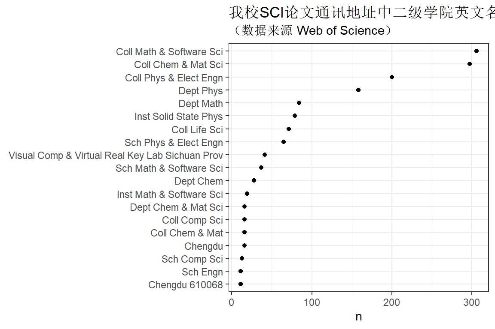
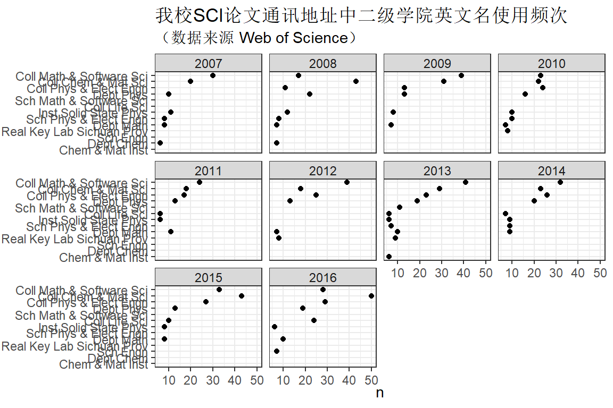

第 3 章 通讯地址统计
“What we know is a droplet, what we don’t know is an ocean”
— Newton
3.1 各学院英文地址
通过对四川师范大学主页1进行访问，将部分学院官网提供的英文名进行汇总，如表所示：
| 学院名 | 英文名 |
|---|---|
| 数学与软件科学学院 | school of mathematical sciences |
| 化学与材料科学学院 | school of chemistry and materials science |
| 物理与电子工程学院 | school of physics and electronic engineering |
| 生命科学学院 | college of life science |
| 计算机科学学院 | college of computer science |
3.2 统计
看看论文中大家的通讯地址是否也和官网的一样？和我预想的有些差别，论文中地址的书写比较五花八门，看来需要规范。
addr <- sicnu_set %>%
select(C1) %>%
str_extract_all("Sichuan Normal Univ,\\s+([^,]*),") %>% unlist()
str(addr)## chr [1:1790] "Sichuan Normal Univ, Coll Phys & Elect Engn," ...dt <- tibble( Coll_name = addr) %>%
separate(Coll_name, into = c("univ", "coll", "no_use"), sep = ",") %>%
select(univ, coll)
head(dt)dt %>% count(univ, coll) %>%
arrange(desc(n)) %>%
filter(n > 10) %>%
ggplot(aes(n, reorder(coll, n) )) +
geom_point() +
labs(y = NULL) +
ggtitle("我校SCI论文通讯地址中二级学院英文名使用频次", subtitle = '（数据来源 Web of Science）') 
dt %>% count(univ, coll) %>%
arrange(desc(n)) %>%
filter(n > 10) %>%
ggplot(aes(n, reorder(coll, n) )) +
geom_point(size=3) +
geom_segment(aes(x=0,
xend=n,
y=coll,
yend=coll)) +
labs(y = NULL) +
ggtitle("我校SCI论文通讯地址中二级学院英文名使用频次", subtitle = '（数据来源 Web of Science）') 
3.3 部分学院结果
| univ | coll | n |
|---|---|---|
| Sichuan Normal Univ | Coll Math & Software Sci | 306 |
| Sichuan Normal Univ | Dept Math | 84 |
| Sichuan Normal Univ | Sch Math & Software Sci | 37 |
| Sichuan Normal Univ | Inst Math & Software Sci | 19 |
| Sichuan Normal Univ | Coll Math | 8 |
| Sichuan Normal Univ | Sch Math | 3 |
| Sichuan Normal Univ | Coll Math & Software | 2 |
| Sichuan Normal Univ | Math & Software Sci Coll | 2 |
| Sichuan Normal Univ | Coll Math & Soft Ware Sci | 1 |
| Sichuan Normal Univ | Dept Math & Software | 1 |
| Sichuan Normal Univ | Dept Math & Software Sci | 1 |
数学与软件科学学院中英文地址使用频次最多的是Coll Math & Software Sci，达到306篇，其次是Dept Math，共计到84篇。而在官网上提供的英文名为school of mathematical science，由此可见，存在的差异较大。可以看到官网提供的英文名称较为片面，不能完全概括学院内的研究方向。因此，建议相关研究者在发表论文时使用college of math and software science，缩写为Coll Math & Software Sci。
tb %>% filter(str_detect(coll, "Phys")) %>%
knitr::kable( caption = "物理学院学院发表的 SCI 论文中使用各种英文地址的频次.")| univ | coll | n |
|---|---|---|
| Sichuan Normal Univ | Coll Phys & Elect Engn | 200 |
| Sichuan Normal Univ | Dept Phys | 158 |
| Sichuan Normal Univ | Inst Solid State Phys | 79 |
| Sichuan Normal Univ | Sch Phys & Elect Engn | 65 |
| Sichuan Normal Univ | Inst Phys & Elect Engn | 8 |
| Sichuan Normal Univ | Lab Low Dimens Struct Phys | 7 |
| Sichuan Normal Univ | Inst Solid Phys | 6 |
| Sichuan Normal Univ | Sch Phys | 4 |
| Sichuan Normal Univ | Coll Phys | 3 |
| Sichuan Normal Univ | Coll Phys & Eectron Egineering | 1 |
| Sichuan Normal Univ | Coll Phys & Electton Engn | 1 |
| Sichuan Normal Univ | Inst Atom & Mol Phys | 1 |
| Sichuan Normal Univ | Inst Phys | 1 |
| Sichuan Normal Univ | Phys & Elect Engn Coll | 1 |
| Sichuan Normal Univ | Sch Phys & Electron Engn | 1 |
| Sichuan Normal Univ | Tech Coll Phys Sci | 1 |
物理与电子工程学院的论文统计中使用较多的两种形式分别是Coll Phys & Elect Engn和Dept Phys，而四川师范大学官网中提供的英文名为school of physics and electronic engineering。建议相关研究者使用college of physics and electronic engineering作为英文通信地址。
tb %>% filter(str_detect(coll, "Chem")) %>%
knitr::kable( caption = "化学与材料科学学院发表的 SCI 论文中使用各种英文地址的频次.")| univ | coll | n |
|---|---|---|
| Sichuan Normal Univ | Coll Chem & Mat Sci | 297 |
| Sichuan Normal Univ | Dept Chem | 28 |
| Sichuan Normal Univ | Coll Chem & Mat | 16 |
| Sichuan Normal Univ | Dept Chem & Mat Sci | 16 |
| Sichuan Normal Univ | Dept Chem & Mat | 10 |
| Sichuan Normal Univ | Chem & Mat Inst | 9 |
| Sichuan Normal Univ | Sch Chem & Mat Sci | 9 |
| Sichuan Normal Univ | Coll Chem | 6 |
| Sichuan Normal Univ | Inst Chem & Mat | 6 |
| Sichuan Normal Univ | Chem & Mat Sci Coll | 4 |
| Sichuan Normal Univ | Coll Chem & Mat Chem | 4 |
| Sichuan Normal Univ | Chem & Mat Sci | 2 |
| Sichuan Normal Univ | Fac Chem | 2 |
| Sichuan Normal Univ | Inst Chem | 2 |
| Sichuan Normal Univ | Chem & Mat Coll | 1 |
| Sichuan Normal Univ | Coll Chem & Mat Sci & Visual Comp | 1 |
| Sichuan Normal Univ | Departement Chem & Mat Sci | 1 |
化学与材料科学学院发表的论文中英文地址出现最多的是Coll Chem &Mat Sci，频次达到297次，而官网上的英文名为school of chemistry and materials science，差异性不大，建议相关研究者使用college of chemistry and materials science。
tb %>% filter(str_detect(coll, "Life")) %>%
knitr::kable( caption = "生命科学学院发表的 SCI 论文中使用各种英文地址的频次.")| univ | coll | n |
|---|---|---|
| Sichuan Normal Univ | Coll Life Sci | 71 |
| Sichuan Normal Univ | Sch Life Sci | 4 |
| Sichuan Normal Univ | Life Sci Coll | 3 |
生命科学学院发表的SCI论文中使用Coll Life Sci作为通信地址的论文数量远远高于其他形式地址，同时与四川师范大学所提供的英文名相一致，因此建议相关领域研究者使用college of life science 作为英文通信地址。
3.4 随年份的变化
wrt <- sicnu_set %>%
select(C1, PY) %>%
mutate(colleges = str_extract_all(C1, "Sichuan Normal Univ,\\s+([^,]*),") ) %>%
select(PY, colleges) %>%
tidyr::unnest(colleges) wrt %>%
separate(colleges, into = c("univ", "coll", "no_use"), sep = ",") %>%
count(PY, coll) %>%
arrange(PY, desc(n)) %>%
filter(n > 5) %>%
ggplot(aes(n, reorder(coll, n) )) +
geom_point() +
facet_wrap(~PY) +
labs(y = NULL) +
ggtitle("我校SCI论文通讯地址中二级学院英文名使用频次", subtitle = '（数据来源 Web of Science）') 
library(ggrepel)
timesData <- wrt %>%
separate(colleges, into = c("univ", "coll", "no_use"), sep = ",") %>%
count(PY, coll) %>%
arrange(PY, desc(n)) %>%
filter(n > 5)
timesfinalYear <- timesData %>%
filter(PY == 2016)
timesfirstAppearance <- timesData %>%
filter(PY == 2007)
ggplot(timesData, aes(x=PY, y= n)) +
geom_line(aes(colour=coll), size=1.5) +
geom_point(shape = 21, stroke = 2, size=5, fill = "white", aes(colour=coll)) +
geom_label(data = timesfirstAppearance, aes(label=coll), size=3, fontface = "bold", color='#2f2f2f',hjust=1) +
geom_label(data = timesfinalYear, aes(label=coll), size=3, fontface = "bold", color='#2f2f2f', hjust=0) +
scale_y_reverse(lim=c(20,1), breaks = scales::pretty_breaks(n = 20)) +
scale_x_continuous(expand = c(.12, .12), breaks = scales::pretty_breaks(n = 5)) +
ggtitle('Times World Universities Ranking') +
xlab(NULL) +
ylab("World Rank") +
theme_bw() +
theme(panel.background = element_rect(fill = '#ffffff'),
plot.title = element_text(size=14), legend.title=element_blank(),
axis.text = element_text(size=11), axis.title=element_text(size=11),
panel.border = element_blank(), legend.position='none',
panel.grid.minor.x = element_blank(), panel.grid.minor.y = element_blank(),
axis.ticks.x=element_blank(), axis.ticks.y=element_blank())
library(gridExtra)
library(grid)
library(ggpubr)
library(scales)
pplot <- function(df) {
p <- df %>%
ggplot( aes(x = fct_reorder(coll, n), y = n, fill = PY, width=0.75)) +
geom_bar(stat = "identity") +
scale_fill_discrete(drop = F) +
theme_bw()+
theme(legend.position="none") +
labs(y="number count", x="", title = unique(df$PY))+
#scale_y_continuous(expand = c(0,0),labels=percent) +
coord_flip()
}
timesData <- wrt %>%
separate(colleges, into = c("univ", "coll", "no_use"), sep = ",") %>%
filter(!str_detect(coll, "Visual")) %>%
count(PY, coll) %>%
arrange(PY, desc(n)) %>%
filter(n > 5 )
glist <- timesData %>%
mutate_at(vars(PY), funs(factor)) %>%
split(.$PY) %>%
map(~pplot(.))
ggpubr::ggarrange(plotlist = glist, nrow =3, ncol = 4)